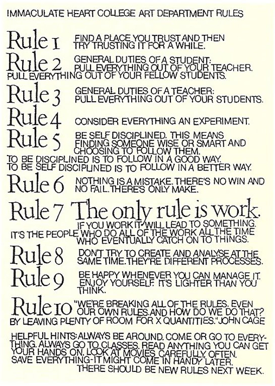

RULE ONE: Find a place you trust, and then try trusting it for awhile.
RULE TWO: General duties of a student — pull everything out of your teacher; pull everything out of your fellow students.
RULE THREE: General duties of a teacher — pull everything out of your students.
RULE FOUR: Consider everything an experiment.
RULE FIVE: Be self-disciplined — this means finding someone wise or smart and choosing to follow them. To be disciplined is to follow in a good way. To be self-disciplined is to follow in a better way..
RULE SIX: Nothing is a mistake. There’s no win and no fail, there’s only make..
RULE SEVEN: The only rule is work. If you work it will lead to something. It’s the people who do all of the work all of the time who eventually catch on to things..
RULE EIGHT: Don’t try to create and analyze at the same time. They’re different processes.
RULE NINE: Be happy whenever you can manage it. Enjoy yourself. It’s lighter than you think..
RULE TEN: “We’re breaking all the rules. Even our own rules. And how do we do that? By leaving plenty of room for X quantities.” (John Cage).
HINTS: Always be around. Come or go to everything. Always go to classes. Read anything you can get your hands on. Look at movies carefully, often. Save everything — it might come in handy later..
There should be new rules next week.
